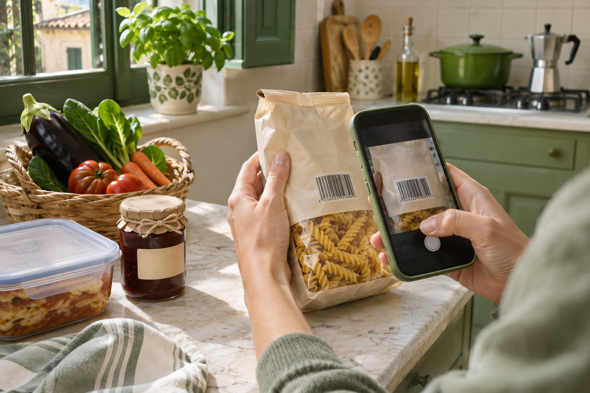

Max
‘I’d like to know what we have at home without opening every cupboard!’
LET’S GET ACQUAINTED
We’re Max, Eva and Leo. We’ll show you around EatMeFirst: no big technical words, and perhaps a joke along the way.
‘I’d like to know what we have at home without opening every cupboard!’

‘And use it before it goes bad! But you two, put everything back where it belongs…’

‘I’ll show you how. One step at a time: you’ll soon get the hang of it.’
Buying something we already had, forgetting a product at the back of the fridge, not remembering how much is left. EatMeFirst helps you organise these everyday things. And while we were at it, we included household care products too.
ADD PRODUCTS · RECORD YOUR PURCHASES
If you’ve used a similar app, the beginning may be familiar: point your phone at the barcode on the package.

The app searches the available catalogues and, when it finds the product, suggests a name, picture and category. Check them: information can be missing or inaccurate. Then enter how many packs you bought, how many items each contains and where you want to keep them.
For example, two packs of six bottles make twelve bottles. Name your locations as you like: kitchen pantry, fridge, cellar…
LESS TIME FILLING IN FIELDS
We’ve tried to make this step quick too. Choose the method that suits the product you’re adding.
For long-life products labelled ‘best before’, you can enter a number of days or months based on your experience: the app calculates a reminder date. Or enter the exact date from the label.
Your estimate is a personal reminder: it does not replace the manufacturer’s date or certify that the product is still safe.
If the food is labelled ‘use by’, enter the exact label date and mark it as strict. Do not replace it with an estimate or move it later.
This particularly applies to perishable foods carrying that wording. Fresh food does not always have a label, though: for loose goods, you choose a reminder to check them.
Always follow storage instructions and the instructions for after opening. Dates in the app help you organise your stock: they are not a guarantee of food safety.
Type a name: ‘market courgettes’, ‘homemade jam’ or ‘leftover lasagne, frozen’. Then enter the quantity, location and, if needed, a date to check it. Everything else works the same way.
You can do this when a barcode exists but the search finds nothing too: fill in the fields yourself and continue.
As soon as you confirm Add products, the operation saves immediately in the browser on the phone or PC you’re using: you don’t need another save button. The product appears in Inventory, where you can check what you have, where it is and the dates you entered. The app’s guides explain each field as you use it.
It’s the program you use to open the app, such as Brave, Chrome or Safari. ‘Saved in the browser’ means the data stays in memory on your phone or PC, managed by that program. We are not keeping it on one of our computers.
Shall we see how to record what you use, including part of a product?
Your pantry, expiry dates and shopping list on your phone. No software installation or registration needed.